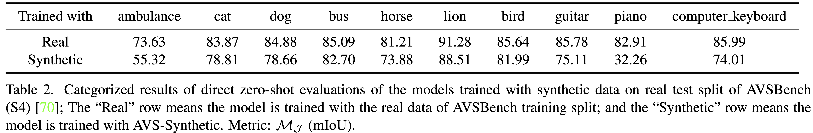
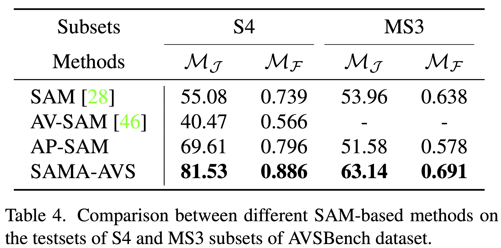
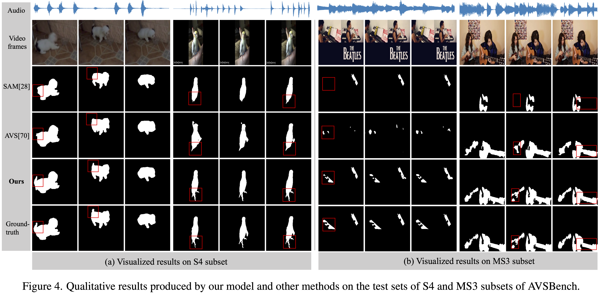

Annotation-free Audio-Visual Segmentation
Abstract
The objective of Audio-Visual Segmentation (AVS) is to localise the sounding objects within visual scenes by accurately predicting pixel-wise segmentation masks.
To tackle the task, it involves a comprehensive consideration of both the data and model aspects. In this paper, first, we initiate a novel pipeline for generating artificial data for the AVS task without human annotating. We leverage existing image segmentation and audio datasets to match the image-mask pairs with its corresponding audio samples with the linkage of category labels,
that allows us to effortlessly compose (image, audio, mask) triplets for training AVS models. The pipeline is annotation-free and scalable to cover a large number of categories.
Additionally, we introduce a lightweight approach SAMA-AVS to adapt the pre-trained segment anything model~(SAM) to the AVS task.
By introducing only a small number of trainable parameters with adapters, the proposed model can effectively achieve adequate audio-visual fusion and interaction in the encoding stage with vast majority of parameters fixed.
We conduct extensive experiments, and the results show our proposed model remarkably surpasses other competing methods.
Moreover, by using the proposed model pretrained with our synthetic data, the performance on real AVSBench data is further improved, achieving 83.17 mIoU on S4 subset and 66.95 mIoU on MS3 set.

AVS-Synthetic Dataset
We propose an annotation-free and scalable pipeline to construct artificial datasets for the AVS task by leveraging off-the-shelf image segmentation and audio datasets. For instance, we can combine an image-mask pair labeled as ''dog'' from the image segmentation dataset LVIS with an audio sample labeled as ''dog barking'' from the audio dataset VGGSound to obtain an {image, mask, audio} triplet, which serves as a training sample for the AVS task.
In this triplet, image and audio are the model's inputs, and mask provides supervision for model training.
Comparing to the existing human-annotated dataset, this dataset synthesis pipeline inherits existing free annotations from computer vision communities, such as LVIS and Open Images; and most importantly, it requires zero extra annotation,
thus can easily be scaled up to cover a large number of categories.
As an instantiation of our dataset collection pipeline for AVS, AVS-Synthetic dataset is proposed which covers 62,609 sounding object instances spanning 46 common categories.
The training set size is 52,609, and the sizes of validation set and test set are both 5,000.
The AVS-Synthetic dataset is obtained with the zenodo of the link: https://zenodo.org/record/8125822 . Please use the dataset under the licenses of LVIS, Openimages and VGGSound datasets.
Audio-Visual Segmentation with SAM Foundation Model
We first investigate the performance of the vanilla SAM model on the AVS task by selecting the most similar predicted mask to the ground-truth mask.
Then we present two models to adapt the SAM model to AVS task: one is Audio-Prompted SAM (AP-SAM) inspired from SAM dealing with text prompts, the other is employing SAM with Adapters for the AVS task (SAMA-AVS).
Audio-Prompted SAM
Inspired by the way of dealing with text prompts of vanilla SAM, we treat the audio as another type of prompt by extracting the audio embeddings and set up another SAM-based model named Audio-Prompted SAM (AP-SAM) for the AVS task.
However, in the AP-SAM model, although the image embedding and the audio embedding tokes are interacting with each other in the mask decoder, we conjecture the fusion is not adequate to drive the AVS task.
For the mask decoder of SAM, it is light-weighted with only two transformer decoder layers.
The reason why it works with such simple design is that the prompts including points, boxes and masks generally only provide explicit location information of target segmentation.
And the whole models are trained with millions of images with semi-supervised learning.
Therefore, a two-layer mask decoder design is competent enough for the vanilla SAM pretraining.
However, to complete the audio-visual segmentation (AVS) task successfully, it requires the model to understand and associate the semantics between both image and audio embeddings; but this audio-image semantic understanding are not explored in the vanilla pretrained SAM. And the fusion and interaction of audio-visual tokens using the two-layer mask decoder of SAM may be too limited.
SAMA-AVS: SAM with Adapters for AVS Task
One simple solution is to inject the audio information into the image features at the encoding process.
However, the computation cost of finetuning the whole encoder weights would be prohibitively high.
To tackle the problem, we propose to perform deep audio-visual fusion with the assistance of adapters.
The adapters are responsible for injecting the audio information into the feature encoding process.
Specifically, the audio tokens are transformed with learnable parameters and then added to the outputs of each transformer encoder layer.
In terms of adapter design, it is simply implemented with two-layer MLPs to adjust the feature dimension and perform feature extraction.
During the training phase, we fix the parameters of the transform encoder layers and the audio encoder, and only update the parameters of the adapters and the light-weight mask decoder.
Note that, the parameters introduced by the adapters constitute only 0.3884% of the entire model, while yielding significant performance gains, as indicated in the experiments.
Experiments On AVS-Synthetic Dataset
We train our proposed SAMA-AVS model on the training split of the AVS-Synthetic dataset and present results on three experimental settings:
standard evaluation on the test split of AVS-Synthetic,
zero-shot evaluation on the test split of AVSBench,
and few-shot evaluation on the test split of AVSBench after real data finetuning.
Experimental results demonstrate that the model trained with synthetic data from our proposed pipeline brings two benefits: (i) improving real-data efficiency,
(ii) boosting the model's overall performance for the AVS task.


Effectiveness of SAMA-AVS
We conduct experiments to compare the performance of our proposed SAMA-AVS with other SAM-based methods and other state-of-the-art methods.
Extensive experimental results demonstrate the effectiveness of our proposed method, outperforming existing SAM-based methods and other competitors by a large margin.
Moreover, pretraining our proposed model on our collected synthetic dataset, the model further attains a higher performance on both subsets of real AVSBench dataset.

-->

Cite the Paper or Dataset
If you use the dataset in your research, please use the following BibTeX entry. If you have any question, feel free to contact jinxliu#sjtu.edu.cn (replace # with @).
@article{liu2023annotation,
title={Annotation-free Audio-Visual Segmentation},
author={Liu, Jinxiang and Wang, Yu and Ju, Chen and Ma, Chaofan and Zhang, Ya and Xie, Weidi},
journal={Proceedings of the IEEE/CVF Winter Conference on Applications of Computer Vision},
year={2024}
}